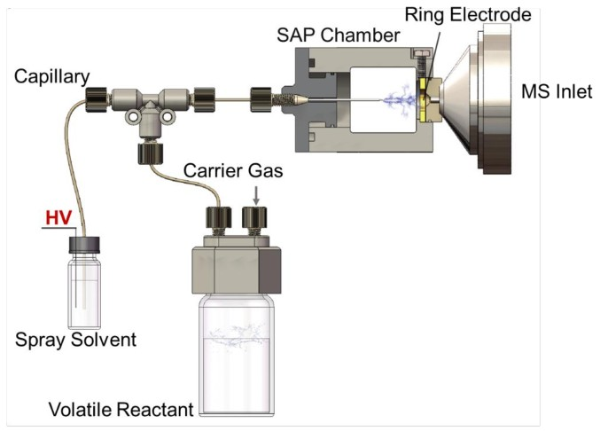
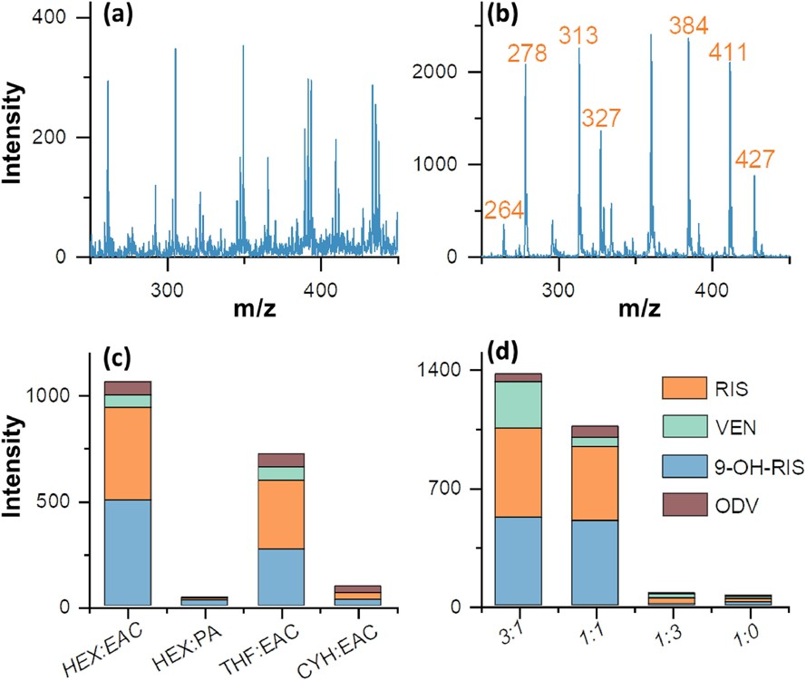
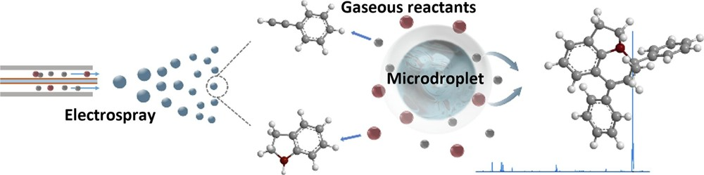
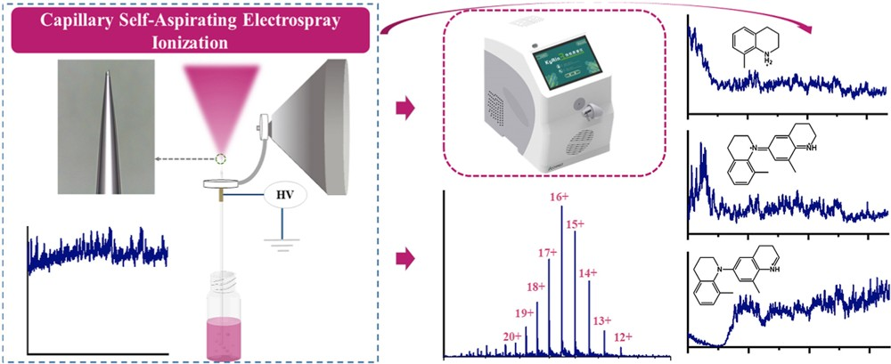
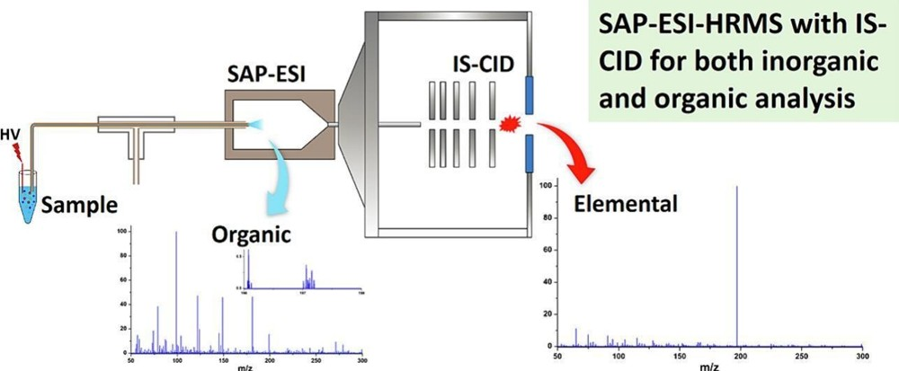

Microdroplet chemistry
Plasma–microdroplet platforms and controlled reaction environments for accelerated chemical transformations.
Plasma-ESI · Reaction interfaces
INSTRUMENT SCIENCE · ANALYTICAL CHEMISTRY
Ph.D., Tsinghua University
Exploring chemistry at small scales.
Building instruments for real-world analysis.
My research connects microdroplet chemistry, ion-source engineering, and miniature mass spectrometry. I design integrated platforms that bring chemical reactions and analytical detection closer together.
Conceptual illustration
Instrument Science and Technology · Shenzhen International Graduate School
01 / RESEARCH
Engineering tools to study chemistry
and bring analysis beyond the laboratory.
Plasma–microdroplet platforms and controlled reaction environments for accelerated chemical transformations.
Self-aspirating electrospray sources and configurable interfaces that simplify sampling and system integration.
Compact analytical platforms for on-site testing, including the detection and quantification of drugs in blood.
02 / PUBLICATIONS
Microdroplet reactions, new ion sources,
and analytical applications.





03 / EXPERIENCE
深圳至秦仪器有限公司 · Shenzhen
Developed applications of miniature mass spectrometry for pesticide residues and psychotropic drugs, and improved ion-source stability and interface compatibility.
杭州谱育科技发展有限公司 · Beijing assignment
Established an ICP-MS elemental analysis platform, standardized workflows, and supported instrument operation, maintenance, and user training.
Department of Chemistry, Tsinghua University
Supported analytical testing with chromatography and mass spectrometry, alongside work on microfluidics and electrochemical sensing.
04 / RECOGNITION
05 / TOOLKIT
Mini-MS · Q-TOF · HPLC-MS · GC-MS · ICP-MS · LTQ · LCQ
SolidWorks · COMSOL · Ansys · Origin · ChemDraw · SEM · XRD · TEM
Electrospray ion sources and mass spectrometers; charged microdroplet reaction devices.
LET’S CONNECT
Microdroplet chemistry, mass spectrometry, and analytical instrumentation.